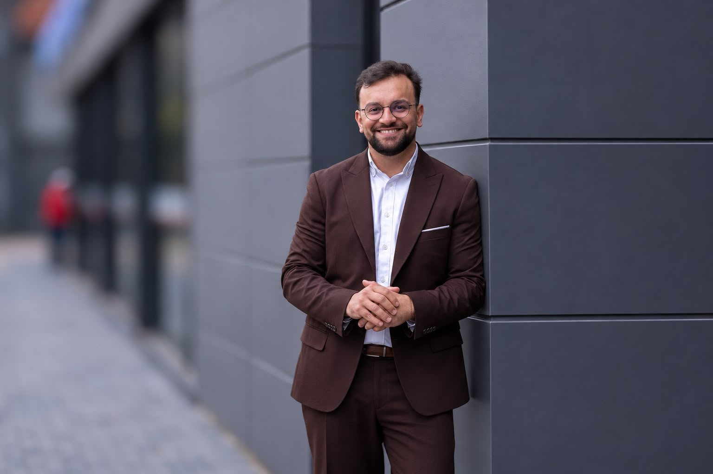
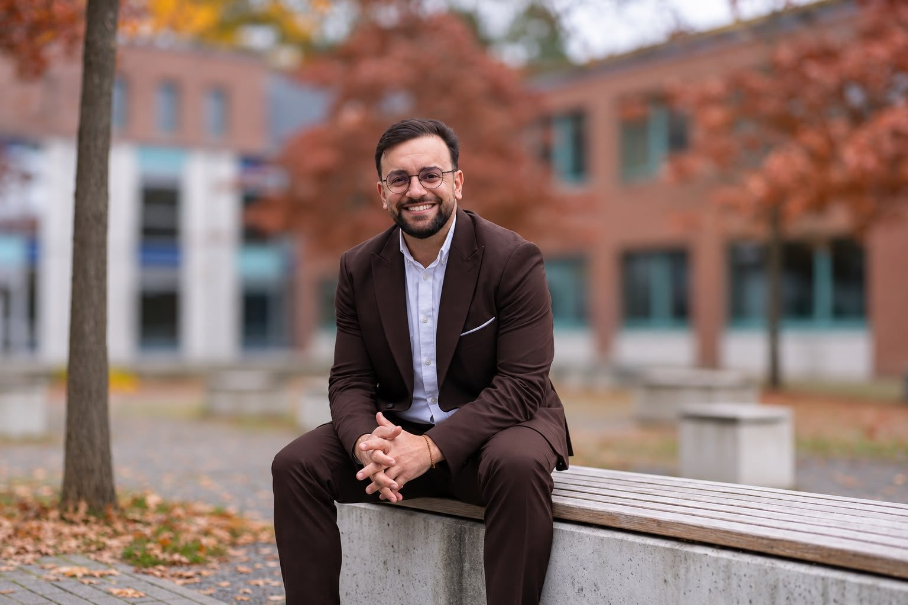

Eintritt in die SPD
Parallel engagiert in der Schülervertretung, später Schülersprecher an der Oberschule Soltau und der BBS Walsrode.
SoltauIch bewerbe mich um die SPD-Kandidatur im Landtagswahlkreis 43 Soltau.

Konsequent für die Menschen in meiner Heimat. Zuhören, ernst nehmen, anpacken. So arbeite ich im Rat und im Kreistag. Und so will ich im Landtag arbeiten.
Liebe Genossinnen und Genossen,
ich bin in Soltau geboren und aufgewachsen. Kita St. Johannis, Wilhelm-Busch-Grundschule, Oberschule Soltau, Ausbildung in Walsrode: Diese Region hat mich geprägt. Heute arbeite ich als Sozialarbeiter im Heidekreis und sehe jeden Tag, was Menschen hier brauchen und wo es hakt.
Seit 2016 bin ich im Soltauer Stadtrat, seit 2023 Vorsitzender unserer Fraktion. Im Kreistag sitze ich seit 2021. Den Landtag kenne ich von innen: Drei Jahre habe ich dort als wissenschaftlicher Mitarbeiter gearbeitet.
2022 ist unser Wahlkreis knapp an die CDU gegangen: 32,8 zu 34,3 Prozent bei den Erststimmen. Ich will, dass unsere Region ab 2027 wieder eine starke sozialdemokratische Stimme in Hannover hat. Deshalb bewerbe ich mich um eure Nominierung.
Dabei bleibe ich bei dem, was mich im Rat und im Beruf trägt: zuhören, Anliegen ernst nehmen und dann anpacken. Ich freue mich auf die Gespräche in euren Ortsvereinen.
Euer Birhat
Vorschlag Abgeleitet aus Birhats bisheriger Arbeit. Er entscheidet, welche Themen es werden.
Von der Schülervertretung über Rat und Kreistag bis in den Landtag: als Mitarbeiter und, wenn ihr wollt, als Abgeordneter.
Parallel engagiert in der Schülervertretung, später Schülersprecher an der Oberschule Soltau und der BBS Walsrode.
SoltauGewählt in den Soltauer Stadtrat. Im selben Jahr Sprecher des Landesschülerrats Niedersachsen, bis 2018.
Soltau · HannoverWissenschaftlicher Mitarbeiter für den Abgeordneten Stefan Politze, bis 2023. Daneben Erzieher in Wohngruppen und Studium der Sozialen Arbeit.
HannoverAbgeordneter im Kreistag, im Jugendhilfeausschuss und im Ausschuss für Wirtschaft, Verkehr, Feuerwehr und Tourismus. Bis 2024 stellvertretender Landesvorsitzender der Jusos.
Bad FallingbostelVorsitzender der SPD-Fraktion im Soltauer Stadtrat. Seitdem auch Sozialarbeiter bei Venito (Diakonie) und stellvertretender Vorsitzender der SPD Heidekreis noch aktuell?.
Soltau · HeidekreisAm Amtsgericht Soltau.
SoltauWiedergewählt in den Stadtrat und erneut zum Fraktionsvorsitzenden gewählt. Kreistag: 2026 wiedergewählt?
SoltauMit eurer Stimme bei der Wahlkreiskonferenz und euren Stimmen bei der Landtagswahl am 26. September 2027.
Wahlkreis 43 Soltau
Ich wurde am 14. August 1998 in Soltau geboren und bin hier aufgewachsen. Heute arbeite ich als Sozialarbeiter im Heidekreis und mache in meiner Freizeit leidenschaftlich gern Sport und Musik.
Meine Eltern stammen aus dem kurdischen Teil der Türkei. Sie wurden dort wegen ihres jesidischen Glaubens verfolgt und flohen in den 1980er-Jahren nach Deutschland. Soltau wurde ihr Zuhause und meine Heimat.
Nach der Schule habe ich mich zum Erzieher ausbilden lassen und danach Soziale Arbeit studiert. Ich begleite junge Menschen und ihre Familien durch schwierige Lebenslagen. Dabei habe ich gelernt, wie entscheidend es ist, zuzuhören und Alltagsprobleme gezielt anzupacken.
Drei Städte und drei Gemeinden im Heidekreis, dazu die Samtgemeinde Fintel mit ihren fünf Gemeinden im Landkreis Rotenburg (Wümme). Wietzendorf und Fintel gehören ab 2027 neu dazu.
Foto: Blühende Schwindebecker Heide, Pirx3000, CC BY-SA 4.0
Fragen, Ideen, Kritik oder eine Einladung in euren Ortsverein? Ich komme gern vorbei und freue mich über jede Nachricht.